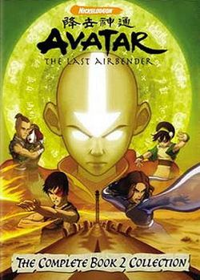
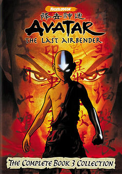

Avatar: The Last Airbender |
Series SynopsisOne hundred years before the start of the series, a twelve year old airbender named Aang learns that he is the new Avatar. Fearful of the heavy responsibilities of stopping an impending world war and with the impending separation from his mentor, Monk Gyatso, Aang flees from home on his flying bison, Appa. During a fierce storm, they crash into the ocean, and Aang's Avatar State freezes them in a state of suspended animation inside an iceberg. |
Book One: Water
|
Book Two: EarthAfter leaving the North Pole and mastering waterbending, Aang travels to the Earth Kingdom to master earthbending. There, the group meets Toph, a blind earthbending prodigy who becomes Aang's second teacher. The heroes discover information about an upcoming solar eclipse which would leave the Fire Nation powerless and open to invasion. They struggle to reach the Earth King with this vital information, but are detoured by Appa's kidnapping. The psychologically self-tormented Zuko, his sister Azula, and her two friends Mai and Ty Lee chase the group as they struggle to reach Ba Sing Se. Azula engineers a coup from within that topples the Earth King and destroys any hope of a large-scale invasion of the Fire Nation. |
Book Three: FireThe group recovers from the fall of Ba Sing Se and travels to the planned invasion site. On the day of the solar eclipse, Aang's group and a smaller band of warriors launch a smaller invasion, which ultimately fails. Zuko confronts his father and defects from the Fire Nation. After a series of events, he manages to gain the trust of the protagonists and becomes Aang's firebending teacher. Aang and Zuko unlock the true secrets of firebending from the ancient "Sun Warriors", Sokka and Zuko later travel to a Fire Nation prison called the Boiling Rock to rescue Sokka's father and Suki, a warrior from Kyoshi Island. On the day of Sozin's Comet, Fire Lord Ozai harnesses the comet's incredible power and energy to start a genocidal campaign to destroy the rest of the world. Aang and his friends split up to face the self-proclaimed Phoenix King Ozai, Azula (about to be crowned as the new Fire Lord), and the Fire Nation air fleet accompanying Ozai. Aang confronts and defeats Ozai. Zuko and Katara defeat Azula before her coronation. Sokka, Toph, and Suki destroy the air fleet. Zuko becomes the new Fire Lord and promises to help the world rebuild from one hundred years of war and suffering. |
 Aang and Appa are awoken a hundred years later by two siblings of Southern Water Tribe origin, Katara and Sokka. Aang learns that the Fire Nation started a war a hundred years earlier, just after his disappearance. The Fire Nation's opening move in its campaign for global conquest was to launch a genocidal attack on the Air Nomads which drove Aang's entire race to extinction, thus making him "the last airbender" left alive. He realizes that he must fulfill his destiny of becoming a fully realized Avatar and return balance to the world by defeating the Fire Nation. Aang sets out to master the three unlearned elements: water, earth, and fire. With Katara and Sokka, Aang decides to head first to the North Pole to find a waterbending master.
Aang and Appa are awoken a hundred years later by two siblings of Southern Water Tribe origin, Katara and Sokka. Aang learns that the Fire Nation started a war a hundred years earlier, just after his disappearance. The Fire Nation's opening move in its campaign for global conquest was to launch a genocidal attack on the Air Nomads which drove Aang's entire race to extinction, thus making him "the last airbender" left alive. He realizes that he must fulfill his destiny of becoming a fully realized Avatar and return balance to the world by defeating the Fire Nation. Aang sets out to master the three unlearned elements: water, earth, and fire. With Katara and Sokka, Aang decides to head first to the North Pole to find a waterbending master.